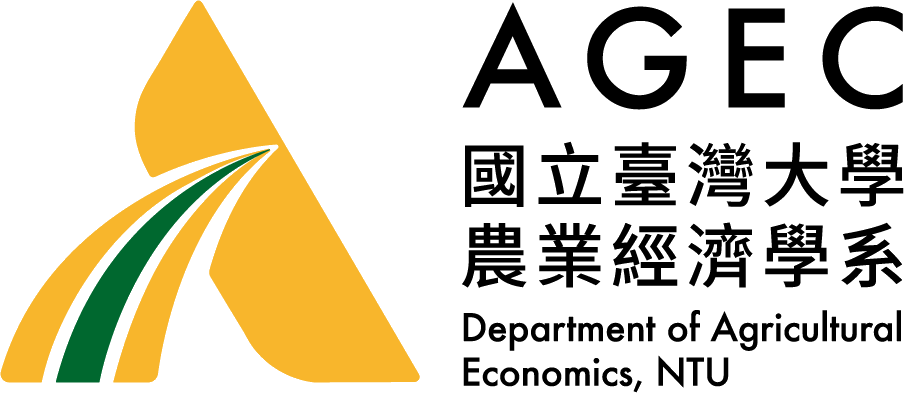
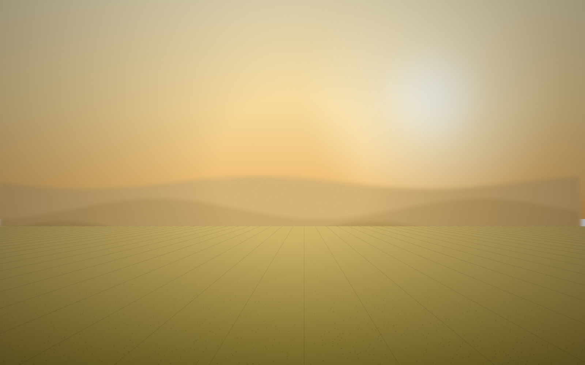

資訊架構龐雜
11 大分類、逾 50 頁，選單重複、層級深，訪客不易找到目標。

以世界頂尖學院的視覺語言，
將百年學術傳承帶進數位時代。
Next.js · Supabase · Vercel — 預計 9/1 交付測試、9/15 正式上線
現行官網歷經多年累積，資訊架構龐雜、視覺語言老舊、不支援行動裝置，內容更新還得仰賴工程協助 — 配不上農經系的學術地位。
在職專班、國際專班各自獨立成選單、又散落在招生與課程之下 — 這正是改版要解決的核心。
我們提出兩種視覺語言，共用相同的資訊架構與品牌色。以下兩版供系辦挑選 — 選定其一，即為正式網站的設計。


年度維運 NT$36,000/年（首年含） · 付款 50 / 30 / 20 · 上線後 90 天保固
國立臺灣大學 農業經濟學系 · 10617 臺北市大安區羅斯福路四段一號 · 農業綜合館 · 提案 2026